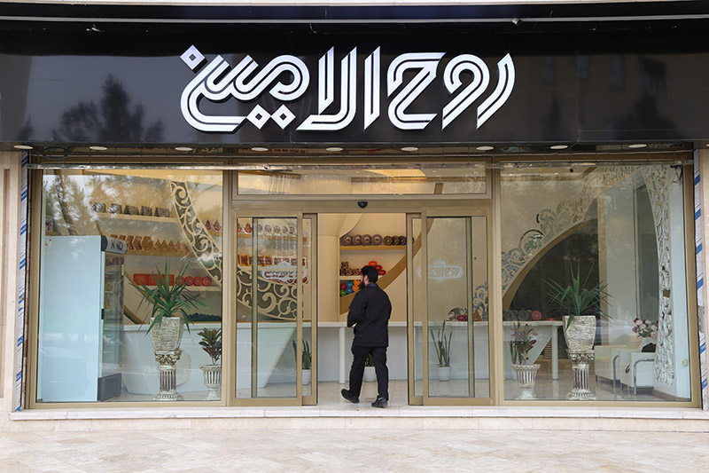

تماس با ما : 09192516666
تاریخچهی سوهان
تاریخچه دقیق اولین سوهان به دوره قاجار در شهر قم نسبت داده میشود؛ حلوایی که در سالهای ۱۲۸۹ تا ۱۲۹۰ هجری قمری هنگامی که قرار بود صحن اتابکی بارگاه حضرت معصومه در شهر مقدس قم افتتاح گردد. بزرگان قم اقدام به برگزاری مراسم باشکوهی جهت افتتاح به عمل آوردند و قرار بود ناصرالدین شاه خود برای افتتاح حاضر شود. ولی بر اساس مقتضیات زمان به خصوص مسائل امنیتی آن زمان، ناصر الدین شاه جانشینی (رئیس ایل قاجار) را به جای خود جهت مراسم افتتاح به قم فرستاد. در هنگام برپایی مراسم با توجه به آداب و رسوم آن دوره هر یک از بزرگان شهر جهت احترام هدایایی را به نماینده شاه ازقبیل صنایع دستی و غیره پیشکش کردند. در این بین یکی از بزرگان بنام ملاابراهیم شماعی جهت پیشکش حلوایی که به آن شکر افزوده شده بود به رئیس ایل قاجار که نماینده شاه هم بود تقدیم کرد. ایشان پس از صرف ناهار این شیرینی را میل نمود. که با ذائقهاش خوش آمد و با توجه به گفتهها ایشان عنوان کردند که این شیرینی همانند سوهانی که آهن را میبرد، غذای مرا برید و هضم کرد. وی درخواست نمود که از این شیرینی مطبوع برای شاه با خود خواهم برد. به این ترتیب از آن زمان نام سوهان بر روی این حلوا گذاشته شد و پس از آن تولید و مصرف سوهان شروع شد؛ که در ابتدا مخصوص بزرگان و اشراف بود. ترکیبات حلوای سوهان در ابتدا شامل: آرد، شکر، روغن، پسته، زعفران، هل و گلاب بوده که به صورت حلوای نرمی طبخ میشدهاست، ولی کمکم با افزودن ترکیبات دیگری همچون زرده تخم مرغ و نیز جایگزینی آرد جوانه گندم به جای آرد گندم خاصیت سفتی و شکنندگی به این شیرینی افزوده شد که بر میزان ماندگاری محصول نیز افزود

دسر سوهان
سوهان لقمه

سوهان باقلوایی
سوهان باقلوایی

سوهان گل

سوهان سکهای

دسر سوهان

سوهان گزی
سوهان عسلی
